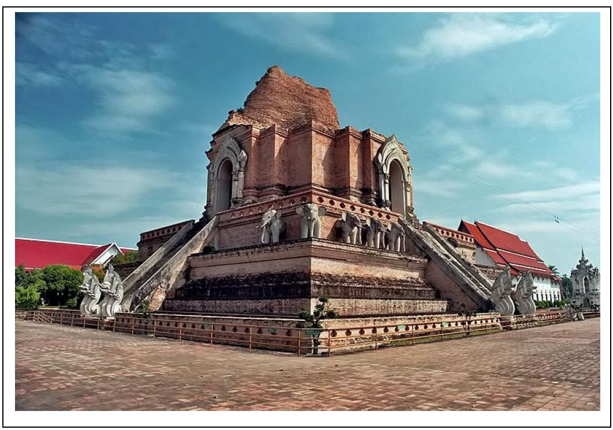

1. วัดพระธาตุดอยสุเทพราชวรวิหาร
วัดพระธาตุดอยสุเทพราชวรวิหาร หรือ วัดพระธาตุดอยสุเทพ วัดคู่บ้านคู่เมืองของจังหวัดเชียงใหม่ที่มีความสำคัญมาก เป็นพระอารามหลวงชั้นโท ตั้งอยู่บนยอดดอยสุเทพ โดยจะต้องเดินขึ้นบันไดนาคเจ็ดเศียรถึง 306 ขั้น ที่ทอดยาวถึงวัด ภายในวัดเป็นที่ประดิษฐาน เจดีย์พระธาตุดอยสุเทพ เป็นเจดีย์สีทองทรงเชียงแสนซึ่งภายในมีพระบรมสารีริกธาตุ และยังเป็นพระธาตุประจำปีเกิดปีมะแม นอกจากนี้บริเวณลานเจดีย์ยังเป็นจุดชมวิวเมืองเชียงใหม่ที่สวยงามที่สุดแห่งหนึ่งอีกด้วยค่ะ
พิกัด : วัดพระธาตุดอยสุเทพราชวรวิหาร
2.วัดพระสิงห์วรมหาวิหา
วัดพระสิงห์วรมหาวิหาร เป็นวัดสำคัญในประวัติศาสตร์แผ่นดินล้านนา ภายในวัดมีพระพุทธรูปสำคัญคือ พระพุทธสิหิงค์ เป็นพระพุทธรูปปางมารวิชัยขัดสมาธิเพชร ประดิษฐานที่ พระวิหารลายคำ พระวิหารที่สร้างและตกแต่งด้วยศิลปะแบบล้านนาแท้ๆ ซึ่งมีจิตรกรรมฝาผนังงดงามค่ะ อุโบสถตกแต่งแบบศิลปะล้านนา หอไตรประดับด้วยรูปปูนปั้นเทวดา และเจดีย์ทรงกลมแบบล้านนา มี พระมหาเจดีย์ธาตุ หรือ พระธาตุหลวง พระธาตุประจำปีนักษัตรปีมะโรง ที่บรรจุพระเกศาธาตุ ทำให้ที่นี่ยังเป็น พระธาตุประจำปีเกิดปีมะโรง ตามความเชื่อทางล้านนาอีกด้วย

3.วัดพระธาตุดอยคำ
วัดพระธาตุดอยคำ เป็นวัดเก่าแก่กว่า 1,300 ปี สร้างขึ้นในสมัย พระนางจามเทวี กษัตริย์แห่งหริภุญชัย เป็นอีกหนึ่งวัดที่มีชื่อเสียงเพราะเป็นที่ประดิษฐาน พระเจ้าทันใจ ซึ่งมีชาวบ้านและนักท่องเที่ยวมากมายทึ่ศรัทธาต่างมากราบไหว้ขอพรเป็นจำนวนมาก นอกจากนี้ ยังเป็นที่บรรจุ พระบรมสารีริกธาตุ ขององค์สมเด็จพระสัมมาสัมพุทธเจ้า ถือเป็นสิ่งศักดิ์สิทธิ์คู่บ้านคู่เมืองเชียงใหม่อีกแห่งหนึ่ง มีตำนานเรื่อง ปู่แสะ และ ย่าแสะ ยักษ์ผัวเมีย 2 ตนบนดอยคำที่น่าสนใจ และยังเป็นสัญลักษณ์อีกแห่งหนึ่งของการบินไทยที่ใช้กำหนดพื้นที่สายตา ก่อนที่จะลงจอดที่สนามบินอีกด้วยค่ะ
พิกัด :วัดพระธาตุดอยคำ
4. วัดเจดีย์หลวงวรวิหาร
วัดเจดีย์หลวงวรวิหาร หรือที่เรียกกันว่า วัดเจดีย์หลวง ตั้งอยู่ใจกลางเมืองเชียงใหม่ เป็นวัดที่ประดิษฐาน เจดีย์ใหญ่ที่สุดในจังหวัดเชียงใหม่ สร้างขึ้นในสมัย พระเจ้าแสนเมือง ที่มีอายุมานับว่า 600 ปี และขยายขนาดให้สูงขึ้นและกว้างขึ้นกว่าเดิมในสมัยพระยาติโลกราช ต่อมาเกิดแผ่นดินไหวทำให้ยอดเจดีย์หักโค่นลง ปัจจุบันมีความสูงคงเหลือ 40.8 เมตร ภายในวัดยังมี เสาหลักเมือง หรือ เสาอินทขิล ประดิษฐานอยู่ในวิหาร ซึ่งในวันแรม 12 ค่ำ เดือน 8 ของทุกปีจะมี ประเพณีบูชาเสาอินทขิล เป็นงานบุญใหญ่อีกด้วย

พิกัด : วัดเจดีย์หลวงวรวิหาร5.วัดพันเตา
วัดพันเตา ตั้งอยู่ติดกับ วัดเจดีย์หลวงวรวิหาร เป็นวัดเก่าแก่ที่มีความงดงาม มีวิหารไม้สักขนาดใหญ่ซึ่งเดิมเป็น หอคำ หรือ คุ้มหลวงของพระเจ้าโหตรประเทศ เจ้าผู้ครองนครเชียงใหม่ ซึ่งต่อมาในสมัย พระเจ้าอินทวิชยานนท์ ทรงศรัทธาและได้รื้อหอคำถวายแก่วัดพันเตาเป็น วิหารหอคำหลวง ภายในวิหารประดิษฐาน พระเจ้าปันเตา พระพุทธรูปศิลปะล้านนา ด้านหลังเป็นเจดีย์ทรงระฆังบนฐานแปดเหลี่ยม รายล้อมด้วยเหล่าเจดีย์สวยงามเป็นเอกลักษณ์ที่โดดเด่น
พิกัด : วัดพันเตา
6.วัดอุโมงค์
วัดอุโมงค์ เป็นวัดเก่าแก่ที่มีเอกลักษณ์คือ อุโมงค์ ซึ่งในสมัยพญากือนาได้สร้างขึ้นเพื่อถวายให้ พระมหาเถรจันทร์ ผู้เชี่ยวชาญในพระไตรปิฎกใช้เป็นที่วิปัสสากรรมฐาน ทำให้ที่นี่เป็นโบราสถานเก่าแก่ที่มีความสำคัญ และอยู่คู่เมืองเชียงใหม่มากว่า 700 ปีเลยทีเดียวค่ะ ภายในอุโมงค์สามารถเดินทะลุถึงกัน มีช่องสำหรับจุดประทีปให้ความสว่าง สะดวกแก่พระเดินจงกรมและปฏิบัติธรรม ด้านบนอุโมงค์เป็น เจดีย์ทรงระฆังกลม ด้านหลังวัดเป็นสวนพุทธธรรมเงียบสงบร่มรื่นและสระน้ำใหญ่เป็นเขตอภัยทาน นักท่องเที่ยวสามารถไปให้อาหารปลาและดูนกได้

7.วัดสวนดอก
วัดสวนดอก หรือ วัดบุปผาราม สร้างขึ้นในสมัย พญากือนา ค่ะ ซึ่งแต่เดิมเป็นพระราชอุทยานของกษัตริย์ล้านนา ภายในวัดมีสถาปัตกรรมสำคัญคือ พระเจดีย์ใหญ่ทรงลังกา เป็นพระเจดีย์ใหญ่ที่บรรจุพระบรมสารีริกธาตุ มีความสูง 24 วา สร้างขึ้นในปี พ.ศ. 1914 กู่ครูบาเจ้าศรีวิชัย เป็นสถานที่บรรจุอัฐิครูบาเจ้าศรีวิชัย นักบุญแห่งล้านนา และอื่นๆ นอกจากนี้ยังเป็นที่ประดิษฐาน พระเจ้าเก้าตื้อ ซึ่งพญาเมืองแก้วโปรดให้หล่อขึ้น เป็นพระพุทธรูปสำริดขนาดใหญ่ ศิลปะแบบเชียงแสนฝีมือช่างล้านนาและสุโขทัย มีตำนานเล่ากันว่า มักจะมีผู้มาอธิษฐานขอบุตร และปรารถนาสิ่งต่างๆ มักจะสมปรารถนาทุกประการอีกด้วย
พิกัด : วัดสวนดอก
8.วัดเชียงมั่น
วัดมิ่งเมือง หรือ วัดช้างมูบ เมื่อก่อนนั้นจะเป็นวัดไทยใหญ่ ซึ่งเป็นวัดเก่าแก่คู่บ้านคู่เมืองเชียงรายนั่นเองค่ะ โดยมีการพบหลักฐานว่ามีอายุมากว่า 800 ปีแล้วค่ะ ภายในวัดมี พระธาตุมิ่งเมือง ซึ่งเป็นปูชนียสถานสำคัญของจังหวัดเชียงรายค่ะ เลบเป็นที่เคารพสักการะของชาวบ้าน และนักท่องเที่ยวอย่างมาก นอกจากนี้ภายในวัดยังมีโบราณสถานและโบราณวัตถุมากมาย โดยเป็นศิลปะล้านนาผสมกับศิลปะแบบพม่าสวยงดงามอย่างมากเลยทีเดียว
9.วัดเจ็ดยอด
วัดเจ็ดยอด เป็นวัดเก่าแก่ในเชียงใหม่ที่มีเอกลักษณ์คือ เจดีย์เจ็ดยอด ซึ่งมีลักษณะคล้าย มหาวิหารโพธิ ที่ พุทธคยา ประเทศอินเดีย ทำให้มีความชื่อว่าเป็น วัดประจำปีคนเกิดปีมะเส็ง หรือ ปีงูเล็ก ตามความเชื่อของชาวล้านนา ที่ฐานเจดีย์ และด้านนอกประดับปูนปั้นรูปเทวดาที่มีความงดงามมาก ซึ่งถือว่าเป็นโบราณสถานที่เก่าแก่ และมีความสำคัญทางพระพุทธศาสนา เพราะเคยจัดประชุมสังคายนาพระไตรปิฎกครั้งที่ 8 ของโลกขึ้นที่วัดแห่งนี้นั่นเองค่ะ นอกจากนี้ยังมี สถูปเจดีย์พระเจ้าติโลกราช และ สัตตมหาสถาน คือ สถานที่ในพุทธประวัติทั้ง 7 แห่ง ได้แก่ โพธิบัลลังก์ อนิมิตเจดีย์ รัตนจงกรมเจดีย์ รัตนฆรเจดีย์ อชปาลนิโครธเจดีย์ ราชายตนเจดีย์ ปัจจุบันเหลืออยู่ที่วัดเจ็ดยอดเพียง 3 แห่งคือ อนิมิตเจดีย์ รัตนฆรเจดีย์ และมุจจลินทเจดีย์
พิกัด : วัดเจ็ดยอด